Libraries and Tools
Throughout the project we used python as the language for the backend. We also used a total number of 13 libraries within python to code the backend part of the project.
-
Python
We used Python to build our backend, including Script Generation, Audio Generation and Video Generation.

-
moviepy
Python library for audio processing
We used moviepy to process audio files, including concatenating multiple mp3 files, giving mp3 file a name etc. We also used it for video processing, helping us do tasks like working out the duration of a video, combining video and audio clips together, etc.
- ibm watson
Python library for text-to-speech conversion.
We used ibm watson for pre-made voices that we added to our voices' dictionary. We also needed to use IBM Watson's API, which the library helped us with.
- elevenlabs
Python library for text-to-speech conversion.
We used elevenlabs library to generate an audio file using the voice, text and the API.
- textblob
Python library for processing textual data.
We used textblob for analysing the sentiment of the script whether it was positive, negative or neutral
- pydub
Python library for audio manipulation.
We used pydub for adding music to our episodes.
- os
Python module for using operating system dependent functionality.
We used os to remove the files used in generation that were no longer needed.
- nltk
Python library for natural language processing tasks.
We used nltk's functions to identify the keywords of the script, that we later used in the image generation prompt.

- dotenv
Python module used for loading environment variables.
We used dotenv to hide sensitive information, while still being able to use it. We created a .env file, stored the APIs in there and used dotenv to load them back in.
- collections
Python module used for providing specialized data structures.
We used module called Counter from collection to count the frequency of some words, which helped us in determining the keywords used for image generation.
- requests
Python library for making HTTP requests.
We used requests to send a POST request to a specified URL in order to generate an image based on given text prompts and additional parameters.
- numpy
Python library used for numerical computing.
We used numpy to convert an image into a numpy array, which helped take the image's dimension that were later used in the video generation.

- random
Python module used for generating random numbers.
We used random to generate a picture used for video generation from a folder with 20+ pictures.
Script Generation
The script generation works as follows:...
Audio Generation
The audio generation works as follows:
Firstly, the text script is passed to TextToSpeech.py, it then asks the user to choose voices for the host and the guest. If the user does not want to change the voices, the voices are set to default values.
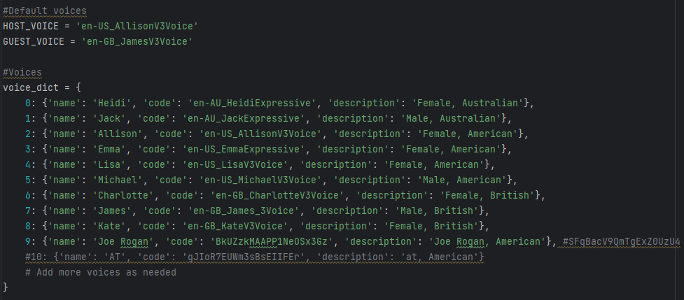Voices Dictionary Note, If the chosen voice starts with "en-", IMB Watson Text-To-Speech is used for the voices. However, if it does not - ElevenLabs Voice Cloning is utilized for generating the corresponding audio as we used two different Text-To-Speech tools. Then, the script is read speech by speech identified by "Host" or "Guest" indicators and the code generates an mp3 file for each of the speech segments using the voices selected.
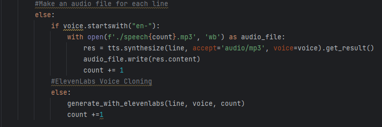Choosing Tool 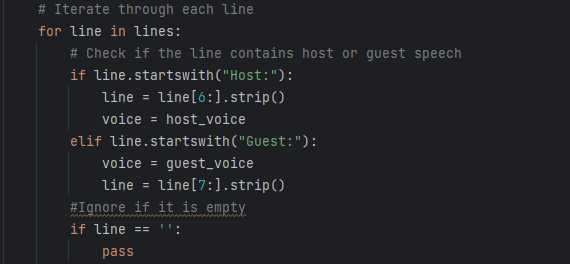Identifying Turns Then, AudioMerger.py combines all of the individual mp3 files into a single one, called final_speech.mp3 and deletes the individual files as they are no longer needed.
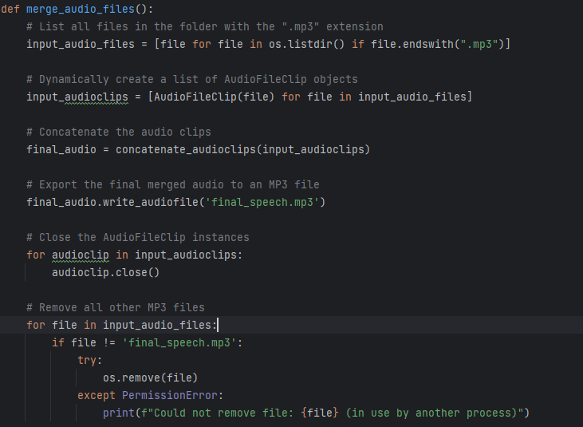Merging MP3 Files After that, the function called analyze_sentiment evaluates the script, marking it as positive, negative, or neutral by determining its polarity. (polarity scores help quickly identify the overall mood of a text). Typically, the text is quantified with a number between -1 and 1, hence we only have 3 options for the polarity. A score closer to -1 represents a negative sentiment, 1 is positive, and around 0 is neutral. Based on the sentiment of the script, the appropriate music is then applied to the final_speech.mp3 to produce the final audio file.
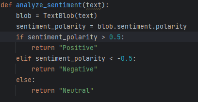Determining Polarity Score 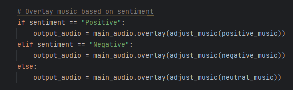Applying Music Video Generation
The video generation works as follows:
To begin with, an image needs to be generated to be displayed throughout the video. There are two ways it can be generated. The first one is: the function called generate_image gets executed with the text variable (that contains the script generated) as a parameter. Then, it activates another function called extract_keywords to retrieve 7 keywords (we discovered it works well with 7 keywords; but it can be changed to a different number;). All the function does is it tokenises words (splits the text into individual words), then gets rid of the stopwords (such as 'the', 'a', 'and'; words that do not contribute to the meaning of the text) and counts the number of times each word appears to determine the 7 most common words in the text; they become keywords.
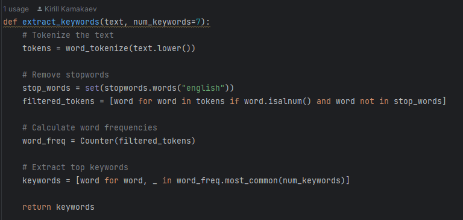Identifying Keywords of Script Then, the function generate_image makes use of the keywords inside the prompt, providing StabilityAI with the details of the image desired. Once it receives the image, it checks if the HTTP response is successful (status code 200), extracts image data from the response JSON (json converts http responses into pytthon dictionaries that can be accessed within python), and saves it as a PNG file named "text_to_image.png" in the current directory. However, if the response is not successful , it raises an exception.
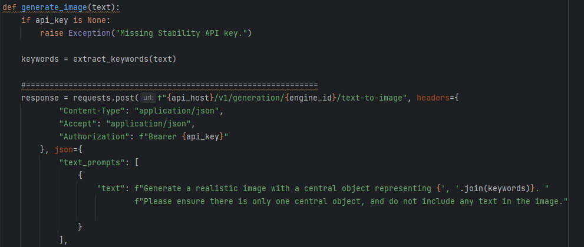Sending a prompt 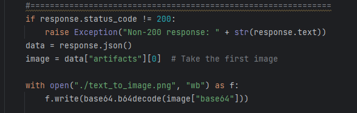Checking for errors and naming the image A different, more simple approach, includes randomly selecting an image from a folder with pre-made pictures. It starts with determining a file path of image (that's going to be used) by applying a very intuitive function called choose_image, which randomly selects a number between 1 and 50 and the image with this number gets chosen.
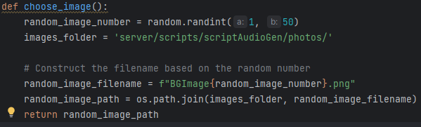Choosing a random image 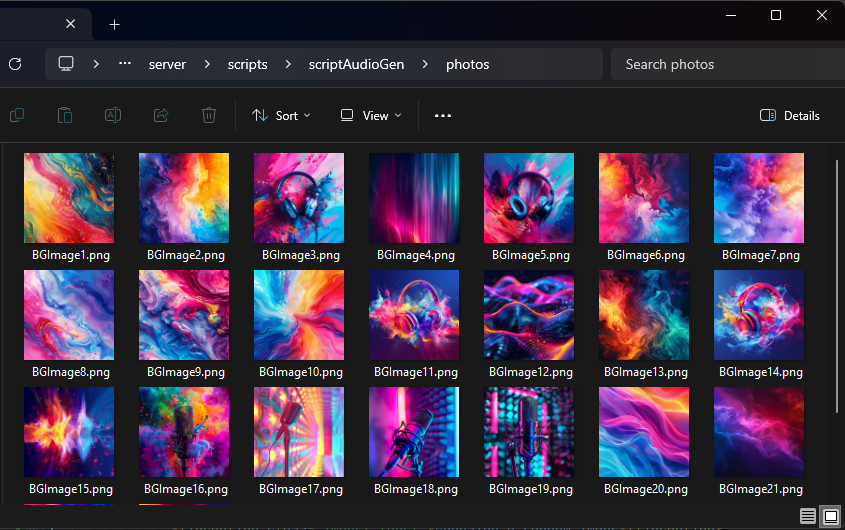Pre-made images Once we get an image, the process of creating a video out of it begins. Firstly, it loads an image from the specified path using the PIL library. After that, it converts this image into a NumPy array for more efficient manipulation and processing of the image data. Then, the code determines the length of the audio clip and creates a video clip with a static image, using the image array as the frame generator function and setting the duration of the video to match the audio duration. Finally, it combines the video clip with the audio clip to create the final video and writes it to an MP4 file with specified codecs, frame rate, and threading options.
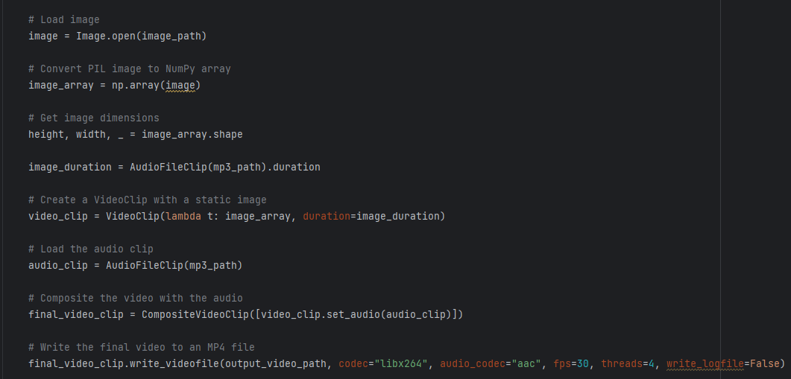Creating video clip. 

- ibm watson